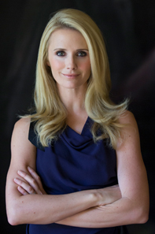

Meet Jennifer
 An advocate for women, girls, and their families, Jennifer Siebel Newsom is a filmmaker, speaker and President and CEO of the non-profit organization The Representation Project, a call-to-action campaign and media organization established to shift people's consciousness, inspire individual and community action and ultimately, transform culture.
After graduating with honors from Stanford University and Stanford’s Graduate School of Business, Jennifer worked in Africa and Latin America, helping women entrepreneurs create their own socially and environmentally responsible businesses. She then moved to Hollywood to pursue acting, quickly landing roles in TV and film including Mad Men, LIFE, In the Valley of Elah, Rent, and Something’s Gotta Give.
There - dismayed by the way women were presented in front of the camera - Jennifer realized she needed to do more work behind the camera. So she wrote, directed, and produced the award winning documentary film, Miss Representation which exposes the underrepresentation of women in positions of power and influence in America and challenges the media’s limited and often disparaging portrayals of women. Miss Representation premiered at the 2011 Sundance Film Festival to sold out crowds and was picked up by Oprah Winfrey’s OWN network. Newsom subsequently launchedMissRepresentation.org- now The Representation Project.
In 2012, Jennifer was an Executive Producer of the Oscar-Nominated documentary, The Invisible War, which unveils the epidemic of rape in the U.S. military. She is currently writing, directing, and producing two documentaries, The Mask You Live In and The Great American Lie, which explore how our culture’s narrow definition of masculinity is harming our boys, men, and society at large.
Jennifer has been recognized for her work on Newsweek's List of "150 Fearless Women Who Shake the World", Fast Company’s “League of Extraordinary Women”, and San Francisco Business Times’ “Most Influential Women in Business”. She has been featured in media outlets such as ABC, NPR, MSNBC, Fox News, Forbes, The Chicago Tribune, O Magazine, Elle, and Vogue, among others. Newsom has received awards including the “Champion for Kids Award” from Common Sense Media, the “Visionary Award” from Vision 2020, and the “Forever Green Award” from Girl Scouts of Northern California. In addition, she received an honorary doctorate degree in Communications from Simmons College in 2013.
An internationally recognized speaker, Newsom has spoken at institutions including The World Bank, TEDxWomen, Google, Deutsche Bank, Charles Schwab, Fortune’s Most Powerful Women’s Summit, Soroptimist International of the Americas Conference, Harvard University, MIT, Stanford University, The California Senate, and The National Coalition of Girls Schools.
Today, when she’s not running The Representation Project and making documentaries, Newsom serves as a board member for PBS’s Northern California affiliate KQED, a Global Advisory Board member of the Dove Self Esteem Project, a member of the Corporation for Public Broadcasting's Women and Girls Lead Leadership Council, and a commissioner on the Girl Scouts’ Healthy MEdia Commission.
Newsom resides in the San Francisco Bay Area with her husband, California Lieutenant Governor Gavin Newsom, and is the proud mother of three young children, Montana, Hunter and Brooklynn.